Modello gerarchico di Poisson#
In questo capitolo, proseguiremo la discussione sul modello gerarchico bayesiano utilizzando PyMC, concentrandoci questa volta sul caso in cui i dati seguono una distribuzione di Poisson.
Esaminiamo il problema di determinare quanti pazienti segue in media uno psicologo professionista. Il numero medio di casi per uno psicologo può variare considerevolmente, in base alle aree di specializzazione, all’ambiente di lavoro e al numero di ore che lo psicologo decide di lavorare ogni settimana. Una ricerca condotta dall’American Psychological Association (APA) rivela che quasi il 42% dei psicologi negli Stati Uniti lavora, in media, tra le 40 e le 49 ore a settimana. Ciò indica che la maggior parte degli psicologi a tempo pieno ha un carico di lavoro che varia tra i 15 e i 20 clienti in un determinato momento.
In questo capitolo, esamineremo il modello gerarchico di Poisson utilizzando dati simulati. Immagineremo che i dati siano frutto di una ricerca condotta attraverso interviste a 30 psicologi, selezionati casualmente dall’Ordine degli Psicologi, in cinque regioni italiane. Durante le interviste, viene chiesto a ciascun psicologo quanti pazienti stia seguendo al momento.
import numpy as np
import pandas as pd
import matplotlib.pyplot as plt
import seaborn as sns
import pymc as pm
import pymc.sampling_jax
import bambi as bmb
import scipy.stats as stats
from scipy.stats import gaussian_kde
import arviz as az
import warnings
warnings.filterwarnings("ignore", category=UserWarning)
warnings.filterwarnings("ignore", category=FutureWarning)
warnings.filterwarnings("ignore", category=Warning)
%config InlineBackend.figure_format = 'retina'
RANDOM_SEED = 42
rng = np.random.default_rng(RANDOM_SEED)
az.style.use("arviz-darkgrid")
sns.set_theme(palette="colorblind")
Preparazione del notebook#
Importiamo un set di dati simulati. La variabile location fornisce un codice numerico identificativo per cinque diverse regioni italiane in cui sono stati effettuati i rilevamenti dei dati. La variabile patients indica il numero di pazienti seguiti da ciascuno dei 30 psicologi intervistati in ciascuna delle cinque regioni.
dat_wide = pd.read_csv("../data/region_patients_wide.csv")
print(dat_wide.head())
location_1 location_2 location_3 location_4 location_5
0 12 7 7 8 15
1 12 4 6 9 10
2 6 6 9 7 12
3 13 9 6 14 10
4 12 3 15 6 6
dat_wide.shape
(30, 5)
Esploriamo i dati attraverso la rappresentazione grafica di istogrammi e diagrammi KDE (Kernel Density Estimation).
fig, axes = plt.subplots(nrows=1, ncols=len(dat_wide.columns), figsize=(12, 4))
for i, col in enumerate(dat_wide.columns):
sns.histplot(
dat_wide[col], bins=10, kde=True, ax=axes[i]
)
plt.tight_layout()
plt.show()
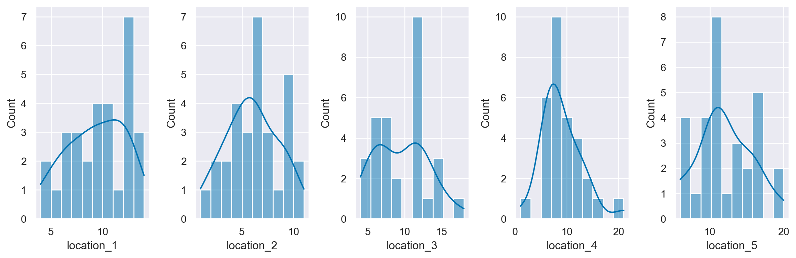
Modello con pooling completo#
Iniziamo il nostro processo di modellazione considerando un modello che tralascia l’informazione sul raggruppamento dei dati nelle 5 regioni diverse. Per implementare il modello con pooling completo iniziamo a trasformare i dati in formato long.
# Fare una copia così da non cambiare il DataFrame originale
dw = dat_wide.copy()
# Reset dell'indice per utilizzarlo come una colonna
dw.reset_index(inplace=True)
# Convertire il DataFrame in formato long utilizzando melt
dat_long = pd.melt(dw, id_vars=['index'], var_name='location', value_name='patients')
# Rinominare la colonna 'index' in 'obs' per maggiore chiarezza
dat_long.rename(columns={'index': 'obs'}, inplace=True)
# Visualizzare il DataFrame risultante
print(dat_long)
obs location patients
0 0 location_1 12
1 1 location_1 12
2 2 location_1 6
3 3 location_1 13
4 4 location_1 12
.. ... ... ...
145 25 location_5 11
146 26 location_5 11
147 27 location_5 19
148 28 location_5 11
149 29 location_5 15
[150 rows x 3 columns]
Il modello con pooling completo sarà basato sulle seguenti componenti:
Verosimiglianza di Poisson: Partiamo dall’assunzione che la variabile
patients, che indica il numero di pazienti in cura presso ciascun psicologo, segua una distribuzione di Poisson. Il parametro di questa distribuzione, chiamatorate, è sconosciuto e verrà stimato dal modello.Distribuzione Gamma per il parametro
rate: Per rappresentare l’incertezza riguardo al parametrorate, utilizziamo una distribuzione a priori Gamma. In PyMC, la distribuzione Gamma è definita da due parametri, \(\mu\) e \(\sigma\), che rappresentano rispettivamente la media e la deviazione standard della distribuzione.Iper-parametri \(\mu\) e \(\sigma\): Invece di fissare dei valori specifici per \(\mu\) e \(\sigma\), consideriamo questi come iper-parametri del nostro modello. Per ciascuno di essi, utilizziamo una distribuzione a priori per rappresentare l’incertezza che abbiamo su tali parametri. Dato che sia \(\mu\) che \(\sigma\) devono essere positivi, optiamo per una distribuzione Half-Normal, una variante della distribuzione normale troncata sulla parte positiva. Nello specifico, scegliamo una deviazione standard di 10 per \(\mu\) e di 20 per $\sigma`.
Il codice PyMC corrispondente a questo modello è il seguente:
with pm.Model() as model_pooling:
y_data = pm.ConstantData("y_data", dat_long["patients"])
h_mu = pm.HalfNormal("h_mu", sigma=10)
h_sigma = pm.HalfNormal("h_sigma", sigma=20)
rate = pm.Gamma("rate", mu=h_mu, sigma=h_sigma)
y_obs = pm.Poisson("y_obs", mu=rate, observed=y_data)
pm.model_to_graphviz(model_pooling)
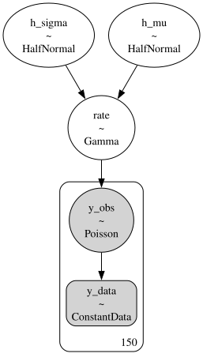
Eseguiamo il prior preditive check.
with model_pooling:
idata_pooling_prior_pred = pm.sample_prior_predictive(samples=100, random_seed=rng)
Sampling: [h_mu, h_sigma, rate, y_obs]
I valori della distribuzione predittiva a priori sono contenuti nell’oggetto idata_pooling_prior_pred.
idata_pooling_prior_pred
-
<xarray.Dataset> Dimensions: (chain: 1, draw: 100) Coordinates: * chain (chain) int64 0 * draw (draw) int64 0 1 2 3 4 5 6 7 8 9 ... 90 91 92 93 94 95 96 97 98 99 Data variables: h_sigma (chain, draw) float64 13.59 42.05 4.391 31.63 ... 12.96 12.09 5.648 h_mu (chain, draw) float64 5.73 4.88 5.964 4.007 ... 7.09 6.569 11.79 rate (chain, draw) float64 6.666e-05 5.67e-11 0.6484 ... 1.672 17.82 Attributes: created_at: 2024-02-06T12:24:54.839969 arviz_version: 0.17.0 inference_library: pymc inference_library_version: 5.10.3 -
<xarray.Dataset> Dimensions: (chain: 1, draw: 100, y_obs_dim_0: 150) Coordinates: * chain (chain) int64 0 * draw (draw) int64 0 1 2 3 4 5 6 7 8 9 ... 91 92 93 94 95 96 97 98 99 * y_obs_dim_0 (y_obs_dim_0) int64 0 1 2 3 4 5 6 ... 144 145 146 147 148 149 Data variables: y_obs (chain, draw, y_obs_dim_0) int64 0 0 0 0 0 0 ... 19 18 14 10 14 Attributes: created_at: 2024-02-06T12:24:54.843485 arviz_version: 0.17.0 inference_library: pymc inference_library_version: 5.10.3 -
<xarray.Dataset> Dimensions: (y_obs_dim_0: 150) Coordinates: * y_obs_dim_0 (y_obs_dim_0) int64 0 1 2 3 4 5 6 ... 144 145 146 147 148 149 Data variables: y_obs (y_obs_dim_0) int64 12 12 6 13 12 12 9 ... 6 16 11 11 19 11 15 Attributes: created_at: 2024-02-06T12:24:54.844832 arviz_version: 0.17.0 inference_library: pymc inference_library_version: 5.10.3 -
<xarray.Dataset> Dimensions: (y_data_dim_0: 150) Coordinates: * y_data_dim_0 (y_data_dim_0) int64 0 1 2 3 4 5 6 ... 144 145 146 147 148 149 Data variables: y_data (y_data_dim_0) int32 12 12 6 13 12 12 9 ... 16 11 11 19 11 15 Attributes: created_at: 2024-02-06T12:24:54.845967 arviz_version: 0.17.0 inference_library: pymc inference_library_version: 5.10.3
Li possiamo estrarre nel modo seguente. Si noti che sono contenuti in un array di dimensioni 1 x 100 x 150.
foo = idata_pooling_prior_pred.prior_predictive.y_obs
foo.shape
(1, 100, 150)
Possiamo trasformare questo array in un vettore unidimensionale nel modo seguente.
# Extract the likelihood samples
likelihood_samples = idata_pooling_prior_pred.prior_predictive.y_obs
flattened_array = np.ravel(likelihood_samples.values)
print(flattened_array)
[ 0 0 0 ... 14 10 14]
A qusto punto possiamo creare il grafico per il prior preditive check.
# Plot the prior predictive samples
plt.hist(flattened_array, bins=60, density=True)
plt.xlabel('Number of Patients')
plt.ylabel('Density')
plt.title('Prior Predictive Check')
plt.xlim(0, 40)
plt.show()
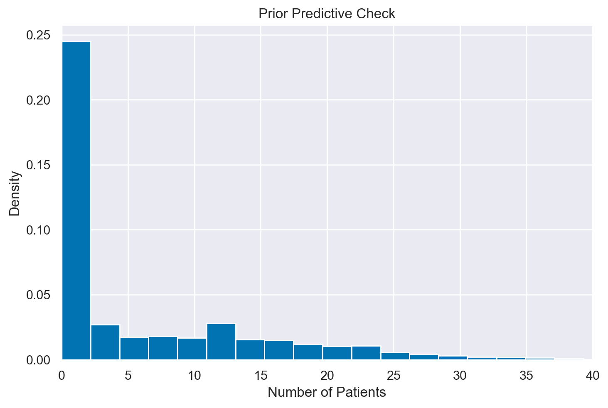
Si noti che le distribizioni a priori scelte sono adeguete per rappresentare i dati osservati che corrispondono ad un tasso medio pari a 10.
Eseguiamo ora il campionamento con il modello di pooling completo. Usiamo il sampling JAX per velocizzare il processo.
with model_pooling:
idata_pooling = pm.sampling_jax.sample_numpyro_nuts(idata_kwargs={"log_likelihood": True})
Show code cell output
Compiling...
Compilation time = 0:00:01.635547
Sampling...
Sampling time = 0:00:02.986652
Transforming variables...
Transformation time = 0:00:00.109901
Computing Log Likelihood...
Log Likelihood time = 0:00:00.410949
Esaminiamo un sommario delle distribuzioni a posteriori.
az.summary(idata_pooling)
| mean | sd | hdi_3% | hdi_97% | mcse_mean | mcse_sd | ess_bulk | ess_tail | r_hat | |
|---|---|---|---|---|---|---|---|---|---|
| h_mu | 10.757 | 4.516 | 2.609 | 19.618 | 0.102 | 0.072 | 1712.0 | 1432.0 | 1.0 |
| h_sigma | 9.534 | 8.609 | 0.536 | 25.143 | 0.206 | 0.146 | 884.0 | 420.0 | 1.0 |
| rate | 9.155 | 0.251 | 8.700 | 9.636 | 0.006 | 0.004 | 1872.0 | 2136.0 | 1.0 |
Questo modello suggerisce che ogni psicologo ha un numero medio di pazienti pari a 10.3 con un intervallo di credibilità al 94% pari a [2.8, 19.2].
Modello gerarchico#
Implementiamo ora un modello gerarchico che tiene in considerazione il ragruppamento dei dati in 5 cluster diversi. Utilizziamo, in questo caso, i dati in formato wide.
Iniziamo a definire delle variabili e coordinate necessarie per specificare la forma delle diverse distribuzioni di densità.
dat_wide.head()
| location_1 | location_2 | location_3 | location_4 | location_5 | |
|---|---|---|---|---|---|
| 0 | 12 | 7 | 7 | 8 | 15 |
| 1 | 12 | 4 | 6 | 9 | 10 |
| 2 | 6 | 6 | 9 | 7 | 12 |
| 3 | 13 | 9 | 6 | 14 | 10 |
| 4 | 12 | 3 | 15 | 6 | 6 |
Utilizzando il contenitore ConstantData, è possibile assegnare etichette nominate alle dimensioni dei dati. Questo si realizza passando un dizionario di coppie chiave-valore ‘dimensione: coordinata’ all’argomento coords di pm.Model durante la creazione del modello. Le coordinate vengono utilizzate per conferire un significato alle dimensioni dei dati e ai parametri nel modello. In questo caso, sono definite due coordinate.
# The data has two dimensions: obs and location
# The "coordinates" are the unique values that these dimensions can take
coords = {"obs": dat_wide.index, "location": dat_wide.columns}
display(coords)
{'obs': RangeIndex(start=0, stop=30, step=1),
'location': Index(['location_1', 'location_2', 'location_3', 'location_4', 'location_5'], dtype='object')}
Ora definiamo un modello gerarchico che amplia l’approccio precedente includendo le diverse località presenti nei dati. Questo passaggio è cruciale se vogliamo ottenere stime separate dei parametri per ognuna delle cinque località, piuttosto che una stima aggregata. Ecco il codice PyMC che implementa questo modello gerarchico:
with pm.Model(coords=coords) as model_h:
# Definizione dei dati
data = pm.ConstantData("observed_score", dat_wide, dims=("obs", "location"))
# Iperparametri per la distribuzione Gamma
h_mu = pm.HalfNormal("h_mu", sigma=10)
h_sigma = pm.HalfNormal("h_sigma", sigma=20)
# Priori Gamma per ogni località
lam = pm.Gamma("lam", mu=h_mu, sigma=h_sigma, dims="location")
# Verosimiglianza Poissoniana per i punteggi
score = pm.Poisson("score", mu=lam, observed=data, dims=("obs", "location"))
La struttura del modello è la seguente:
Iperparametri: Innanzitutto, definiamo gli iperparametri
h_mueh_sigmautilizzando distribuzioni Half-Normal con deviazioni standard di 10 e 20, rispettivamente. Diversamente da una distribuzione normale, la Half-Normal è definita solo per valori positivi.Distribuzione Gamma per
lam: Introduciamo la variabilelamcon una distribuzione Gamma guidata dagli iperparametrih_mu(media) eh_sigma(deviazione standard). L’opzionedims="location"specifica chelamè una variabile multidimensionale, con una dimensione per ogni località. Questo permette di ottenere stime separate per ciascuna delle cinque località.Verosimiglianza Poissoniana: L’ultima parte del modello è la funzione di verosimiglianza, modellata attraverso una distribuzione Poisson. Utilizziamo
dims=("obs", "location")per specificare che per ogni osservazione verrà utilizzato il corrispettivo valore dilam, basato sulla località associata all’osservazione.
Questo modello gerarchico è più sofisticato di quello precedente e permette di catturare la struttura regionale nei dati, fornendo stime separate dei parametri per ciascuna delle 5 regioni.
pm.model_to_graphviz(model_h)
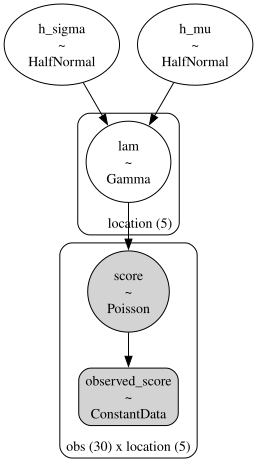
Anche in questo caso, iniziamo con il prior predictive check.
with model_h:
idata_h_prior_pred = pm.sample_prior_predictive()
Sampling: [h_mu, h_sigma, lam, score]
idata_h_prior_pred
-
<xarray.Dataset> Dimensions: (chain: 1, draw: 500, location: 5) Coordinates: * chain (chain) int64 0 * draw (draw) int64 0 1 2 3 4 5 6 7 8 ... 492 493 494 495 496 497 498 499 * location (location) <U10 'location_1' 'location_2' ... 'location_5' Data variables: h_sigma (chain, draw) float64 7.046 49.73 19.44 ... 52.27 24.78 4.405 h_mu (chain, draw) float64 3.242 13.28 13.46 ... 1.464 5.886 2.217 lam (chain, draw, location) float64 2.181 0.07169 ... 3.585 0.006745 Attributes: created_at: 2024-02-06T12:25:00.985539 arviz_version: 0.17.0 inference_library: pymc inference_library_version: 5.10.3 -
<xarray.Dataset> Dimensions: (chain: 1, draw: 500, obs: 30, location: 5) Coordinates: * chain (chain) int64 0 * draw (draw) int64 0 1 2 3 4 5 6 7 8 ... 492 493 494 495 496 497 498 499 * obs (obs) int64 0 1 2 3 4 5 6 7 8 9 ... 20 21 22 23 24 25 26 27 28 29 * location (location) <U10 'location_1' 'location_2' ... 'location_5' Data variables: score (chain, draw, obs, location) int64 1 0 24 29 2 5 0 ... 0 2 0 0 2 0 Attributes: created_at: 2024-02-06T12:25:00.988670 arviz_version: 0.17.0 inference_library: pymc inference_library_version: 5.10.3 -
<xarray.Dataset> Dimensions: (obs: 30, location: 5) Coordinates: * obs (obs) int64 0 1 2 3 4 5 6 7 8 9 ... 20 21 22 23 24 25 26 27 28 29 * location (location) <U10 'location_1' 'location_2' ... 'location_5' Data variables: score (obs, location) int64 12 7 7 8 15 12 4 6 ... 5 8 11 10 7 11 12 15 Attributes: created_at: 2024-02-06T12:25:00.990077 arviz_version: 0.17.0 inference_library: pymc inference_library_version: 5.10.3 -
<xarray.Dataset> Dimensions: (obs: 30, location: 5) Coordinates: * obs (obs) int64 0 1 2 3 4 5 6 7 8 ... 21 22 23 24 25 26 27 28 29 * location (location) <U10 'location_1' 'location_2' ... 'location_5' Data variables: observed_score (obs, location) float64 12.0 7.0 7.0 8.0 ... 11.0 12.0 15.0 Attributes: created_at: 2024-02-06T12:25:00.991429 arviz_version: 0.17.0 inference_library: pymc inference_library_version: 5.10.3
# Extract the likelihood samples
likelihood_samples = idata_h_prior_pred.prior_predictive.score
flattened_array = np.ravel(likelihood_samples.values)
# Plot the prior predictive samples
plt.hist(flattened_array, bins=200, density=True)
plt.xlabel('Number of Patients')
plt.ylabel('Density')
plt.title('Prior Predictive Check')
plt.xlim(0, 40)
plt.show()
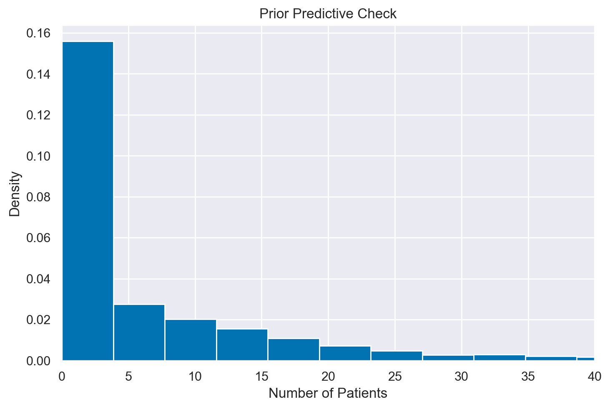
Eseguiamo ora il campionamento.
with model_h:
idata = pm.sampling_jax.sample_numpyro_nuts(idata_kwargs={"log_likelihood": True})
Show code cell output
Compiling...
Compilation time = 0:00:01.732194
Sampling...
Sampling time = 0:00:02.635809
Transforming variables...
Transformation time = 0:00:00.107170
Computing Log Likelihood...
Log Likelihood time = 0:00:00.418505
Otteniamo un sommario delle distribuzioni a posteriori. Si noti che otteniamo una distribuzione a posteriori per il tasso di occorrenza nel suo complesso, oltre alla stima del tasso di occorrenza per ciascuna regione.
az.summary(idata, round_to=2)
| mean | sd | hdi_3% | hdi_97% | mcse_mean | mcse_sd | ess_bulk | ess_tail | r_hat | |
|---|---|---|---|---|---|---|---|---|---|
| h_mu | 9.70 | 1.78 | 6.93 | 13.31 | 0.05 | 0.03 | 1661.10 | 1595.73 | 1.0 |
| h_sigma | 3.47 | 2.28 | 0.99 | 7.22 | 0.06 | 0.04 | 1855.63 | 1624.74 | 1.0 |
| lam[location_1] | 9.30 | 0.53 | 8.33 | 10.32 | 0.01 | 0.01 | 4015.04 | 2749.30 | 1.0 |
| lam[location_2] | 6.12 | 0.45 | 5.32 | 6.99 | 0.01 | 0.01 | 3956.34 | 3354.42 | 1.0 |
| lam[location_3] | 9.56 | 0.55 | 8.53 | 10.60 | 0.01 | 0.01 | 4489.84 | 2942.68 | 1.0 |
| lam[location_4] | 8.95 | 0.54 | 7.96 | 9.96 | 0.01 | 0.01 | 4570.62 | 3276.55 | 1.0 |
| lam[location_5] | 11.88 | 0.63 | 10.68 | 13.02 | 0.01 | 0.01 | 4238.99 | 2773.61 | 1.0 |
I risultati presentati forniscono un riassunto delle stime a posteriori per i parametri h_mu, h_sigma e i valori di lam per ciascuna delle cinque regioni. Concentrandoci su ESS (Effective Sample Size) e \( r_{\hat{}} \), possiamo fare le seguenti osservazioni:
Effective Sample Size (ESS):
h_mueh_sigma: Con valori di ESS bulk rispettivamente di 2271.64 e 1901.29, queste stime indicano che vi è un numero sufficiente di campioni indipendenti per effettuare affermazioni affidabili sui parametri.lam[1]alam[5]: I valori ESS per queste stime sono tutti ben al di sopra del migliaio, segnalando una buona efficienza nel campionamento e una convergenza affidabile.
\( r_{\hat{}} \):
Per tutti i parametri, il valore di \( r_{\hat{}} \) è 1.0, il che è un segnale positivo. Un valore di \( r_{\hat{}} \) così vicino a 1 indica che le catene di Markov hanno realizzato la convergenza in modo appropriato e che non c’è evidenza di non convergenza. Questo implica che i risultati sono affidabili e che le inferenze possono essere fatte con confidenza.
In sintesi, sia l’ESS che i valori di \( r_{\hat{}} \) per questi parametri suggeriscono che il modello ha campionato efficacemente lo spazio dei parametri, e che le stime a posteriori sono attendibili. Le stime di h_mu e h_sigma ci forniscono un’indicazione chiara dell’incertezza a priori sulla media e sulla deviazione standard della distribuzione gamma del tasso di occorrenza, mentre i valori per lam ci offrono le stime a posteriori del tasso di occorrenza nelle diverse regioni.
È importante notare che, sebbene la stima del tasso di occorrenza possa apparire simile a quella ottenuta con il modello non gerarchico, il modello gerarchico fornisce un intervallo di credibilità decisamente più stretto per la stima di questo parametro rispetto al modello non gerarchico. Questo aspetto rivela che, utilizzando il modello non gerarchico e trascurando quindi la struttura raggruppata dei dati, si finisce per sovrastimare l’incertezza della nostra stima del parametro di interesse. In altre parole, il modello gerarchico tiene conto delle correlazioni tra i gruppi, offrendo una rappresentazione più realistica dell’incertezza nella stima del tasso di occorrenza.
Inoltre, abbiamo ottenuto una stima del tasso di occorrenza separatamente per ciascuna regione. Si noti che ci sono grandi variazioni tra le regioni. Nella regione 5, il numero medio di pazienti per psicologo è quasi 12, mentre nella regione 2 questo valore si riduce alla metà.
Nella figura seguente, i medesimi dati sono rappresentati mediante un “forest plot” del parametro rate, che rappresenta il numero di pazienti per ciascuno psicoloog, insieme all’intervallo di credibilità Highest Density Interval (HDI) al 94%.
samples_lam = idata.posterior["lam"]
az.plot_forest(samples_lam, combined=True, hdi_prob=0.94)
plt.show()
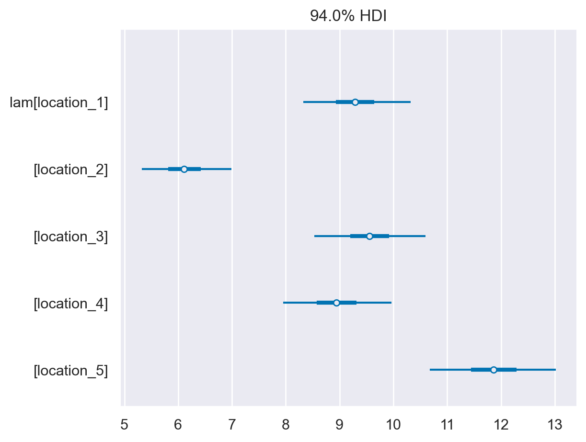
Esaminiamo ora una rappresentazione grafica della distribuzione a posteriori dei parametri h_mu e h_sigma, che rappresentano l’incertezza sulla media e sulla deviazione standard della distribuzione gamma del parametro “tasso di occorrenza”. Nel contesto del nostro modello gerarchico:
h_muè l’iper-parametro che rappresenta la media a priori della distribuzione gamma del tasso di occorrenza.h_sigmaè l’iper-parametro che rappresenta la deviazione standard a priori della distribuzione gamma del tasso di occorrenza.
La visualizzazione delle distribuzioni a posteriori e delle tracce si può ottenere con il seguente comando.
az.plot_trace(idata, combined=True, kind="rank_bars")
plt.tight_layout()
plt.show()
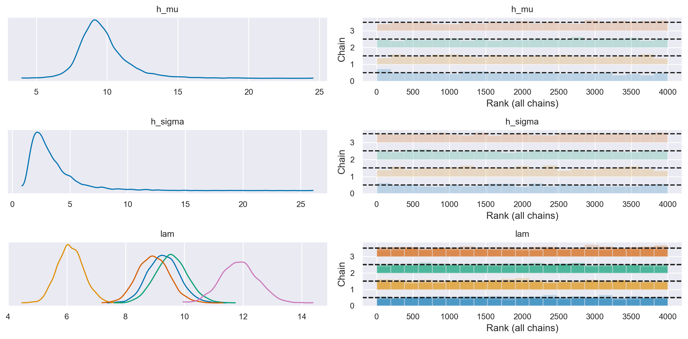
Concludiamo, infine, con il posterior predictive check.
with model_h:
post_pred = pm.sample_posterior_predictive(idata)
Sampling: [score]
az.plot_ppc(post_pred, num_pp_samples=100)
plt.show()
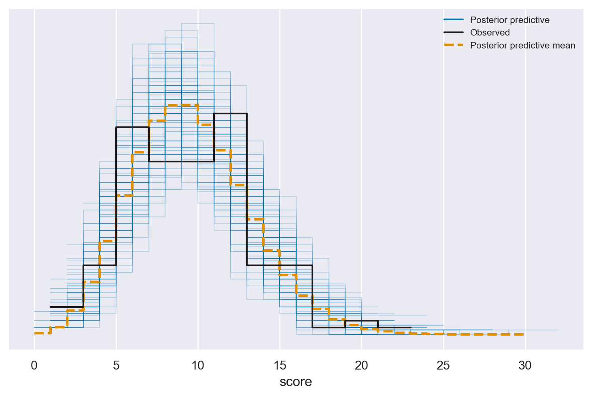
Il controllo predittivo a posteriori mostra che il modello è stato in grado di rappresentare adeguatamente i dati osservati. Questo indica una buona adattabilità del modello, confermando che le supposizioni fatte e la struttura del modello sono coerenti con le informazioni ricavate dai dati.
Dati in formato long#
Per chiarire meglio il significato delle etichette usate in coords e dims, trasformiamo il DataFrame in formato long. A questo fine, utilizziamo il metodo melt, specificando “Location” come nome della nuova colonna che conterrà i nomi delle vecchie colonne e “Value” come nome della nuova colonna che conterrà i valori.
# Trasformazione del DataFrame in formato long
df_long = dat_wide.melt(var_name="Location", value_name="Value")
df_long["Location_idx"] = df_long["Location"].str.extract("(\d+)").astype(int) - 1
display(df_long)
| Location | Value | Location_idx | |
|---|---|---|---|
| 0 | location_1 | 12 | 0 |
| 1 | location_1 | 12 | 0 |
| 2 | location_1 | 6 | 0 |
| 3 | location_1 | 13 | 0 |
| 4 | location_1 | 12 | 0 |
| ... | ... | ... | ... |
| 145 | location_5 | 11 | 4 |
| 146 | location_5 | 11 | 4 |
| 147 | location_5 | 19 | 4 |
| 148 | location_5 | 11 | 4 |
| 149 | location_5 | 15 | 4 |
150 rows × 3 columns
Per adattare il modello PyMC gerarchico ai dati in formato long, è necessario modificare la struttura del modello in modo che accetti un’unica serie di osservazioni piuttosto che una matrice di osservazioni. Inoltre, dovrai introdurre una nuova variabile per indicare l’indice della variabile location per ogni osservazione.
Iniziamo a definire un dizionario coords che definisce le coordinate per le dimensioni del modello.
Nel modello, verranno specificate tre dimensioni: “obs”, “location”, e “location_idx”. Pertanto, il dizionario coords deve includere le informazioni relative all’indice che identifica le osservazioni e sull’indice che identifica location.
Utilizziamo
numpyper creare array di indici per le dimensioni “obs” e “location”.Per la dimensione “obs”, creiamo un array che va da 0 al numero di righe in
dat_long(i.e., il numero di osservazioni).Per la dimensione “location”, creiamo un array che va da 0 al numero di location uniche in
dat_long.
coords = {
"obs": np.arange(len(df_long)),
"location": np.arange(len(df_long['Location'].unique())),
}
coords
{'obs': array([ 0, 1, 2, 3, 4, 5, 6, 7, 8, 9, 10, 11, 12,
13, 14, 15, 16, 17, 18, 19, 20, 21, 22, 23, 24, 25,
26, 27, 28, 29, 30, 31, 32, 33, 34, 35, 36, 37, 38,
39, 40, 41, 42, 43, 44, 45, 46, 47, 48, 49, 50, 51,
52, 53, 54, 55, 56, 57, 58, 59, 60, 61, 62, 63, 64,
65, 66, 67, 68, 69, 70, 71, 72, 73, 74, 75, 76, 77,
78, 79, 80, 81, 82, 83, 84, 85, 86, 87, 88, 89, 90,
91, 92, 93, 94, 95, 96, 97, 98, 99, 100, 101, 102, 103,
104, 105, 106, 107, 108, 109, 110, 111, 112, 113, 114, 115, 116,
117, 118, 119, 120, 121, 122, 123, 124, 125, 126, 127, 128, 129,
130, 131, 132, 133, 134, 135, 136, 137, 138, 139, 140, 141, 142,
143, 144, 145, 146, 147, 148, 149]),
'location': array([0, 1, 2, 3, 4])}
Ora specifichiamo il modello PyMC.
with pm.Model(coords=coords) as model_h_long:
# Definizione dei dati
data = pm.ConstantData("observed_score", df_long["Value"], dims="obs")
location_idx = pm.ConstantData("location_idx", df_long["Location_idx"], dims="obs")
# Iperparametri per la distribuzione Gamma
h_mu = pm.HalfNormal("h_mu", sigma=10)
h_sigma = pm.HalfNormal("h_sigma", sigma=20)
# Priori Gamma per ogni località
lam = pm.Gamma("lam", mu=h_mu, sigma=h_sigma, dims="location")
# Verosimiglianza Poissoniana per i punteggi
score = pm.Poisson("score", mu=lam[location_idx], observed=data, dims="obs")
pm.model_to_graphviz(model_h_long)
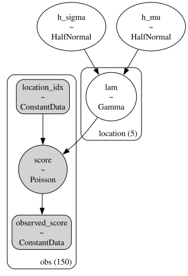
with pm.Model(coords=coords) as model_h_long:
In questa parte, stiamo definendo un nuovo modello PyMC3 con un certo set di coordinate. Le coordinate sono essenzialmente gli indici che useremo per le dimensioni nel modello.
data = pm.ConstantData("observed_score", df_long["Value"], dims="obs")
location_idx = pm.ConstantData("location_idx", df_long["Location_idx"], dims="obs")
Qui, stiamo definendo due set di dati che saranno utilizzati nel modello: i punteggi osservati e gli indici delle location. Questi dati sono definiti come ConstantData, il che significa che non saranno modificati durante l’inferenza.
h_mu = pm.HalfNormal("h_mu", sigma=10)
h_sigma = pm.HalfNormal("h_sigma", sigma=20)
In questa sezione, definiamo gli iperparametri del modello usando distribuzioni HalfNormal. Gli iperparametri sono parametri dei parametri; in questo caso, definiranno i parametri della distribuzione Gamma che verrà definita successivamente.
lam = pm.Gamma("lam", mu=h_mu, sigma=h_sigma, dims="location")
Qui, definiamo un parametro lam per ogni location, utilizzando una distribuzione Gamma con media (mu) e deviazione standard (sigma) definiti dagli iperparametri. Essendo un modello gerarchico, i valori di lam per ogni location sono influenzati dagli iperparametri.
score = pm.Poisson("score", mu=lam[location_idx], observed=data, dims="obs")
Infine, definiamo la verosimiglianza del modello, che è la parte del modello che collega i parametri ai dati osservati. In questo caso, assumiamo che i punteggi osservati seguano una distribuzione di Poisson con un parametro di intensità (mu) che dipende da lam (cioè, varia per ogni location).
pm.PoissonSpecifichiamo che desideriamo usare una distribuzione di Poisson come modello per la variabile di risposta (i.e., il punteggio osservato). La distribuzione di Poisson è una distribuzione di probabilità discreta che esprime la probabilità di un dato numero di eventi che si verificano in un intervallo fisso di tempo o spazio, dato un tasso medio di eventi per intervallo. È definita come:
dove:
\( P(X=k) \): la probabilità di avere \( k \) eventi (in questo caso, il punteggio)
\( \mu \): il parametro di intensità, che rappresenta il numero medio di eventi nell’intervallo
\( e \): la base del logaritmo naturale
\( k! \): il fattoriale di \( k \)
"score"È il nome che assegniamo a questa variabile nel modello.mu=lam[location_idx]Defineniamo il parametro \(\mu\) della distribuzione di Poisson. In questo caso, utilizziamo un array di valori \(\lambda\) (uno per ogni location), e selezioniamo il \(\lambda\) corrispondente per ogni osservazione utilizzandolocation_idx. Quindi, il parametro \(\mu\) è diverso per ogni osservazione, a seconda della “location” dell’osservazione. Questo introduce una dipendenza della verosimiglianza dai parametri specifici della location, rendendo il modello un modello gerarchico.observed=dataColleghiamo i dati osservati (i.e.,data) alla variabile di risposta nel modello. PyMC userà questa informazione per calcolare la verosimiglianza dei dati dati i parametri.Nell’argomento
dims="obs"specifichiamo che la dimensione della variabile aleatoria “score” è “obs”, che rappresenta la dimensione delle osservazioni nel nostro dataset. Questa dimensione è stata definita nel dizionariocoordsall’inizio della definizione del modello.
Eseguiamo il campionamento MCMC.
with model_h_long:
idata = pm.sampling_jax.sample_numpyro_nuts(idata_kwargs={"log_likelihood": True})
Show code cell output
Compiling...
Compilation time = 0:00:01.409296
Sampling...
Sampling time = 0:00:02.880847
Transforming variables...
Transformation time = 0:00:00.069481
Computing Log Likelihood...
Log Likelihood time = 0:00:00.205244
Esaminiamo le distribuzioni a posteriori dei parametri.
az.plot_trace(idata, combined=True, kind="rank_bars")
plt.tight_layout()
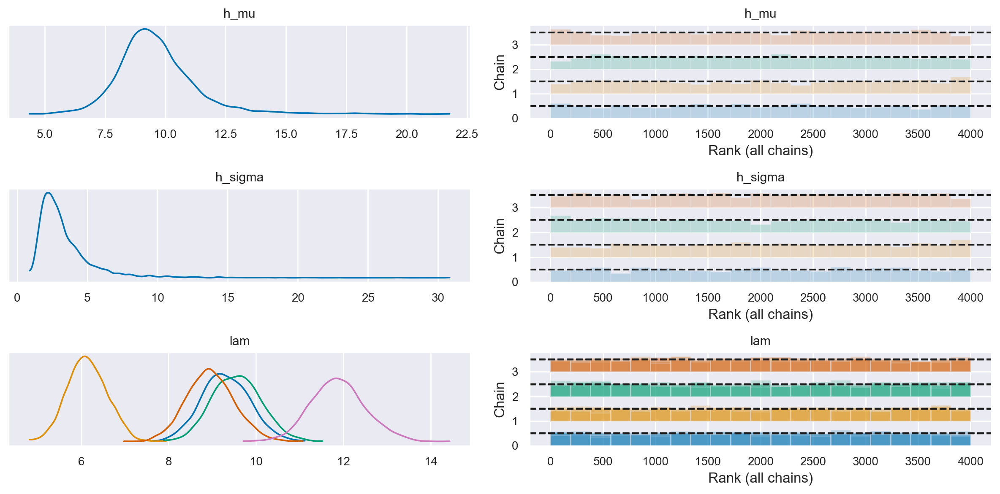
Utilizzando i dati in formato long, abbiamo dunque replicato i risultati ottenuti in precedenza con i dati in formato wide.
Confronto tra modelli#
Ora vogliamo esaminare se esistono vantaggi nell’utilizzare un modello gerarchico rispetto a un modello di pooling completo. Per questo confronto, utilizzeremo la metrica dell’Expected Log Predictive Density (ELPD).
È importante notare che non è possibile confrontare direttamente gli ELPD dei due modelli PyMC precedentemente descritti, in quanto sono stati addestrati su formati di dati diversi: il modello gerarchico su dati in formato wide e il modello di pooling completo su dati in formato long. Per un confronto valido dell’ELPD, è necessario adattare entrambi i modelli ai dati presentati nello stesso formato.
Per affrontare questo problema, ricorreremo a bambi, che è un wrapper di alto livello per PyMC. Sebbene bambi sfrutti PyMC per il campionamento, permette di definire il modello con una sintassi molto più semplice. Inoltre, offre priori “intelligenti” predefiniti, eliminando quindi la necessità di specificare manualmente le distribuzioni a priori.
Nel nostro caso, adatteremo entrambi i modelli ai dati presentati in formato long.
dat_long.head()
| obs | location | patients | |
|---|---|---|---|
| 0 | 0 | location_1 | 12 |
| 1 | 1 | location_1 | 12 |
| 2 | 2 | location_1 | 6 |
| 3 | 3 | location_1 | 13 |
| 4 | 4 | location_1 | 12 |
Definiamo il modello gerarchico nella sintassi richiesta da bambi:
model_hierarchical = bmb.Model(
"patients ~ 1 + (1 | location)", dat_long, family="poisson"
)
La formula "patients ~ 1 + (1 | location)" è un’espressione concisa per definire un modello lineare generalizzato misto (GLMM). Vediamo in dettaglio cosa significa ciascun pezzo della formula:
patients: è la variabile dipendente (o variabile target) che stiamo cercando di modellare. In questo caso, rappresenta il numero di pazienti.~: separa la variabile dipendente dalla parte del modello che descrive i predittori.1: indica un termine d’intercetta nel modello. In pratica, aggiunge una costante a tutti i livelli del modello.+: è un operatore che aggiunge ulteriori termini al modello. In questo caso specifico, stiamo aggiungendo un effetto casuale.(1 | location): è un termine che indica un effetto casuale. L’effetto casuale è specificato per la variabilelocation. Il modello prevede che ci siano diversi livelli dilocatione che ciascuno di essi abbia una propria intercetta casuale. L’uso di(1 | location)indica che stiamo modellando un effetto casuale di intercetta per ognilocationma non stiamo considerando effetti casuali di pendenza.
In termini più tecnici, il modello può essere descritto dalle seguenti equazioni:
\(\text{patients}_{i}\) è il numero di pazienti nell’osservazione \(i\).
\(\lambda_{i}\) è il tasso per l’osservazione \(i\).
\(\alpha\) è l’intercetta globale del modello.
\(\alpha_{\text{location}[i]}\) è l’effetto casuale dell’intercetta per la località della \(i\)-esima osservazione.
\(\sigma_{\alpha}\) e \(\sigma_{\text{location}}\) sono le deviazioni standard delle distribuzioni normali da cui sono estratti \(\alpha\) e \(\alpha_{\text{location}}\), rispettivamente.
Eseguiamo ora il campionamento. L’argomento idata_kwargs={"log_likelihood": True} specifica che richiediamo la log-verosimiglianza necessaria per stimare ELPD.
model_hierarchical_fitted = model_hierarchical.fit(
draws=2000,
target_accept=0.85,
random_seed=RANDOM_SEED,
method="nuts_numpyro",
idata_kwargs={"log_likelihood": True},
)
Show code cell output
Compiling...
Compilation time = 0:00:01.046563
Sampling...
Sampling time = 0:00:02.815002
Transforming variables...
Transformation time = 0:00:00.158290
Computing Log Likelihood...
Log Likelihood time = 0:00:00.232404
Esaminiamo le distribuzioni a posteriori dei parametri. Si noti che Bambi ha trasformato internamente i dati per garantire stabilità numerica ed efficienza computazionale, utilizzando una scala logaritmica.
summary = az.summary(model_hierarchical_fitted)
summary
| mean | sd | hdi_3% | hdi_97% | mcse_mean | mcse_sd | ess_bulk | ess_tail | r_hat | |
|---|---|---|---|---|---|---|---|---|---|
| Intercept | 2.178 | 0.243 | 1.794 | 2.702 | 0.027 | 0.020 | 108.0 | 39.0 | 1.04 |
| 1|location_sigma | 0.441 | 0.359 | 0.107 | 1.405 | 0.066 | 0.048 | 102.0 | 42.0 | 1.05 |
| 1|location[location_1] | 0.048 | 0.249 | -0.498 | 0.434 | 0.027 | 0.020 | 109.0 | 27.0 | 1.04 |
| 1|location[location_2] | -0.370 | 0.248 | -0.921 | 0.014 | 0.027 | 0.023 | 110.0 | 31.0 | 1.04 |
| 1|location[location_3] | 0.076 | 0.248 | -0.477 | 0.492 | 0.027 | 0.020 | 110.0 | 38.0 | 1.04 |
| 1|location[location_4] | 0.009 | 0.246 | -0.519 | 0.426 | 0.027 | 0.020 | 107.0 | 42.0 | 1.04 |
| 1|location[location_5] | 0.295 | 0.245 | -0.261 | 0.669 | 0.026 | 0.019 | 110.0 | 33.0 | 1.03 |
Per convertire queste stime alla scala naturale, è possibile applicare l’inverso della trasformazione alle statistiche riassuntive.
(
np.exp(summary["mean"][0] + summary["mean"][2]),
np.exp(summary["mean"][0] + summary["mean"][3]),
np.exp(summary["mean"][0] + summary["mean"][4]),
np.exp(summary["mean"][0] + summary["mean"][5]),
np.exp(summary["mean"][0] + summary["mean"][6]),
)
(9.262740914994835,
6.098238750117821,
9.52576278289445,
8.908447643635347,
11.857967446453067)
Adattiamo ora ai dati il modello di pooling completo. Questo produrrà un’unica stima del parametro rate.
model_pooling = bmb.Model("patients ~ 1", dat_long, family="poisson")
model_pooling_fitted = model_pooling.fit(
draws=2000,
target_accept=0.85,
random_seed=RANDOM_SEED,
method="nuts_numpyro",
idata_kwargs={"log_likelihood": True},
)
Show code cell output
Compiling...
Compilation time = 0:00:00.570195
Sampling...
Sampling time = 0:00:01.685853
Transforming variables...
Transformation time = 0:00:00.042574
Computing Log Likelihood...
Log Likelihood time = 0:00:00.155814
summary2 = az.summary(model_pooling_fitted)
summary2
| mean | sd | hdi_3% | hdi_97% | mcse_mean | mcse_sd | ess_bulk | ess_tail | r_hat | |
|---|---|---|---|---|---|---|---|---|---|
| Intercept | 2.213 | 0.027 | 2.165 | 2.264 | 0.0 | 0.0 | 3171.0 | 3617.0 | 1.0 |
np.exp(summary2["mean"][0])
9.143104603994704
Ora possiamo procedere al confronto tra il modello gerarchico e il modello di pooling completo, utilizzando la differenza dei loro valori ELPD come criterio. Eseguire un confronto tra modelli bayesiani è molto semplice con az.compare(). In questo specifico caso, forniamo un dizionario che contiene gli oggetti InferenceData generati da Model.fit(). In risposta, az.compare() restituisce un dataframe ordinato dal modello migliore al modello peggiore, in base al criterio ELPD.
models = {"hierarchical": model_hierarchical_fitted, "pooling": model_pooling_fitted}
df_compare = az.compare(models)
df_compare
| rank | elpd_loo | p_loo | elpd_diff | weight | se | dse | warning | scale | |
|---|---|---|---|---|---|---|---|---|---|
| hierarchical | 0 | -394.734627 | 5.852158 | 0.000000 | 0.978922 | 10.676386 | 0.000000 | False | log |
| pooling | 1 | -421.936033 | 1.541919 | 27.201406 | 0.021078 | 13.365812 | 8.341653 | False | log |
La differenza nei valori di ELPD è di 27.3, con un errore standard associato alla differenza di 8.34. Il rapporto tra la differenza ELPD e il suo errore standard è superiore a 3, indicando una credibile differenza tra i due modelli. Sulla base di questi risultati statistici, possiamo concludere che il modello gerarchico offre una migliore aderenza ai dati rispetto al modello non gerarchico.
az.plot_compare(df_compare, insample_dev=False)
plt.show()
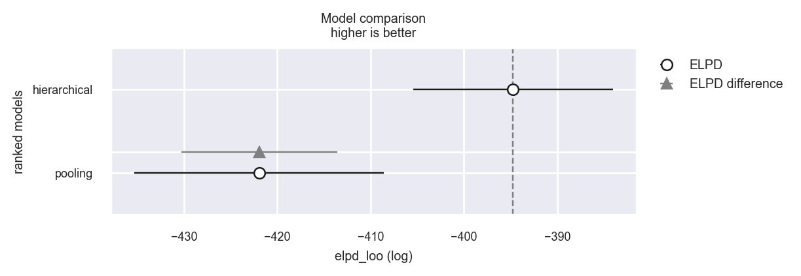
Watermark#
%load_ext watermark
%watermark -n -u -v -iv -w -m
Last updated: Tue Feb 06 2024
Python implementation: CPython
Python version : 3.11.7
IPython version : 8.19.0
Compiler : Clang 16.0.6
OS : Darwin
Release : 23.3.0
Machine : x86_64
Processor : i386
CPU cores : 8
Architecture: 64bit
pandas : 2.1.4
seaborn : 0.13.0
arviz : 0.17.0
scipy : 1.11.4
numpy : 1.26.2
matplotlib: 3.8.2
pymc : 5.10.3
bambi : 0.13.0
Watermark: 2.4.3